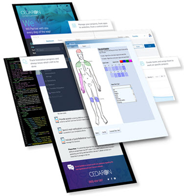

EHR and Connect:
Providing Therapist Electronic Health Record software solutions for the whole industry.
- APTA, AOTA, ASHA, and Speech-Language Pathology

APTA Connect and AOTA Perform, along with the ASHT and Speech modules, are designed in direct collaboration with Registry Society leaders for complete Rehab EMR specification and requirements. Our modules seamlessly incorporate all necessary data elements for each specialty. Our software can be customized easily to allow your hospital or clinic to adapt it to your specific workflows and access our expansive library of tests, tools, and measures.
Connect Provides:
- Documentation - Easy, accurate, defensible documentation to decrease your denials and increase your profitability
- Scheduler - Our software provides the flexibility and ease your practice needs to keep an organized schedule while still managing the last minute changes that often are necessary.
- Integration - Cedaron’s Rehab EMR provides the documentation needs unique to rehabilitation, while integrating with the billing company of your choice and other systems.
- Analytics - Simple Solutions for Advanced Analytics. Measure Results and Improve Outcomes to better understand your business.
- Our web-based program makes setup and updates painless. We don't force you to update your workstations separately. We host your server saving you time and money.